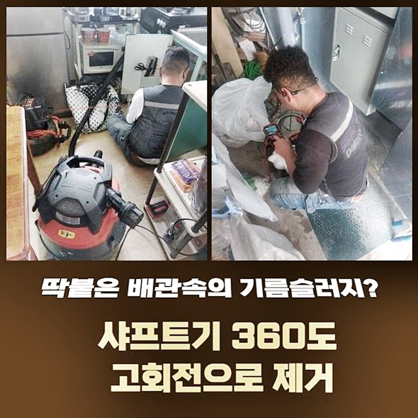
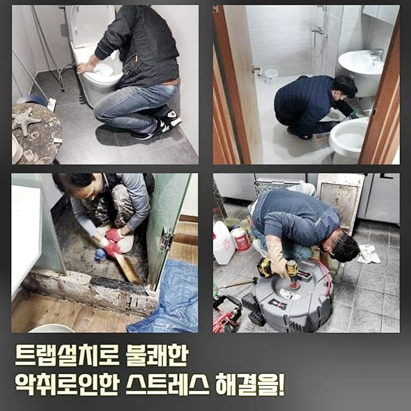
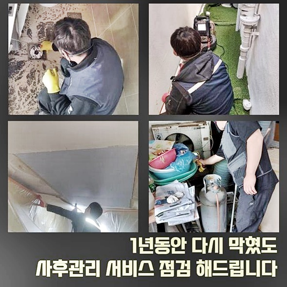
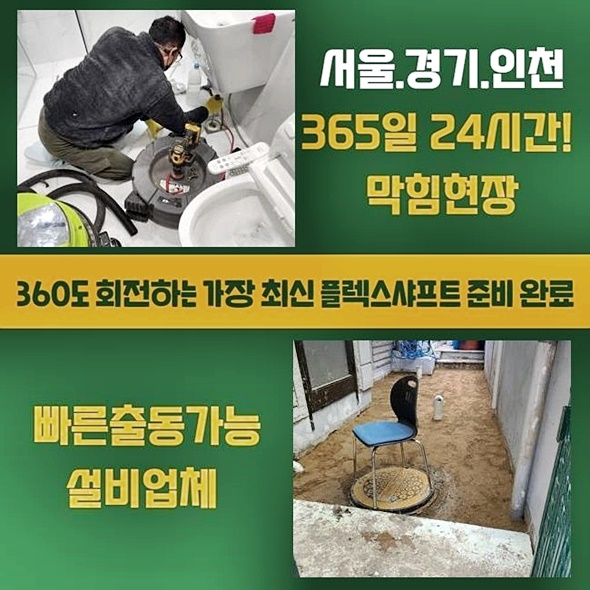
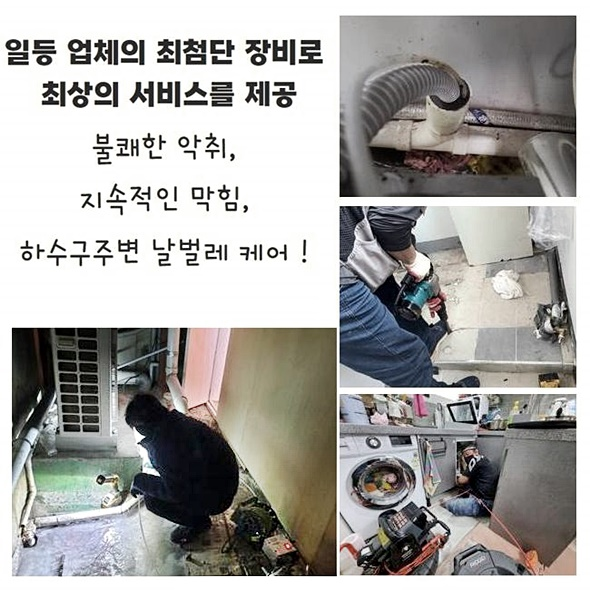
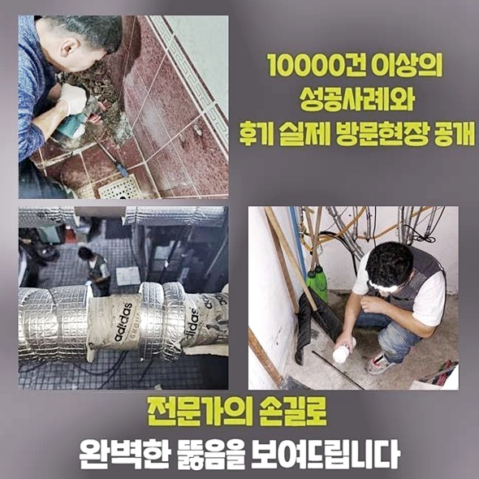

🏠 고양시 원신동세탁실막힘 동산동 배수구뚫기 누수탐지
고양 동산동 하수구막힘 전문 시공 후기

📋 작업 개요
- 위치: 고양 동산동, 동산동, 고양
- 서비스 유형: 하수구막힘, 배관막힘, 누수수리, 역류해결, 뚫는업체, 배관청소, 고압세척
- 작업 일시: 2024. 8. 19. 11:32
- 업체명: 하수구수사대 (010-5615-2118)
🔍 문제 상황
고양시 원신동세탁실막힘 동산동 배수구뚫기 누수탐지
지하실 등에 천장쪽에 설치된 하수관을 지나가다가 보셨을텐데요
평상 시에는 무관심인 채 지나가셨을테죠
이러한 하수관은 공동배수관으로 일컫는데요
이 하수관이 막힌다면 여러 라인에 문제들이 발생되는데요
금일엔 주차장천장 쪽에 메인라인들이 막히며 파생되는 생겨 문의를 하셨습니다
메인라인들이 막히면 전반적인 하수관에 좋지 못한 영향들을 끼치고 추후에 역류되는 증세들이 발생되는데요
저층부분에서 수도 사용 시 안나가는 상황이라는 걸 알려주셨어요
고민을 해결하기 위하여 검수를 이행했습니다
내시경을 이용해 내측 상황들을 지켜봐요
외부에서 관찰해봄직한 내용엔 제한들이 존재하기에 내시경을 깊이 삽입해주고 세심히 살폈습니다
내시경기기로 관찰한 결과 머리카락뭉치와 기름으로 뭉쳐진 슬러지처럼 잔해하수들이 관로를 가득 메웠어요
1차적으로 통수해보고자 샤프트기기를 이용합니다
샤프트장치를 사용해서 흡착물을 청소시켜요

🔎 원인 분석
💡 전문가 진단: 정밀 진단 장비를 사용하여 슬러지의 고착 여부를 판명하고 타격/세척 작업을 실시했습니다.
다음으로는 메인라인으로 쓰는 하수라인을 체크해봐야해요
천장부분에 위치한 관로에 대해 작업들을 진행할 생각이였어요
아래쪽에 위치한 가구에서 전체적으로 문제들이 나타난것으로서 평시에 이런 증세가 생겼을 시 외부쪽이나 메인관로일 수 있어요
메인배수관은 높이 있는 까닭에 유압사다리들을 통해서 시공해야해요
메인배수관의 양상을 들여다보려면 일정위치에 타공작업이 불가피합니다
고객분에게 면밀히 말씀을 드리고서 동의해주시어 최소범위내로 홀을 내주었죠
구멍을 뚫고서 역시나 내시경장비를 삽입하여 화면을 통해 보여지는 내측을 체크해봤습니다
내시경의 경우 외부에서 파악하기 쉽지 않은 배수관을 세심히 보는게 가능하므로 작업 시에 필수적으로 사용됩니다
내시경을 이용해 메인관들을 관찰하였더니 구간마다 단단해진 잔해물이 쌓이는바람에 증상이 심화된 형상이였습니다
상당량의 오염물이 구간마다 쌓이게되어 배출되지 못하게 막힘을 심화시켰습니다
잔해가 대량으로 있던 모습이였고 구간마다 하수관 내측에 자리했기에 고압노즐로 수리들이 행해져야하는 양상으로 보여졌어요
기름성분이 많았기에 당연하게도 아래층들은 하수들이 흘러가지 않아 파생되는 발생된것이죠
막히게되는 현상의 경우 조금씩 배수 시점에 증상들이 나타날 수 있겠으나 불현듯 발생하게 되는 현장도 종종 있어요
먼저 양상이 심각하다면 전문업체를 통하여 협업하는것이 좋고 베스트는 때에 맞춰 진단해서 앞으로 있을 증세가 발생치않게 하는겁니다
이러한 상황을 풀어내도록서 공동관에 세척을 진행할 생각이였어요

🔧 작업 과정
고압수청소를 실시할것을 일러드리고 시공을 수행해보았어요
생각한거보다 다수의 잔해물이 하수도를 채워 꼼꼼하게 수리를 진행해야 했었습니다
당연히 공용관들을 통해서 세대별로 쓰고서 빠지는 하수들이 통과되어 문제들이 나타날 가능성들이 농후해요
갑작스레 문제들이 발생하는 것을 막으려면 메인관도 때에 맞춰 점검하셔야 하겠습니다
타공위치에 노즐들을 삽입하여 잔해를 신속히 청소해봤어요
고압수세척 방법은 노즐에서부터 청수들을 분출시켜 메인관의 잔해를 청소하는 방식인데요
물리적인 힘이 강해 메인관로의 비위생을 바로 잡는데에 좋은 효과를 가집니다
벽부분에 붙어있는 잔해물을 제거시키기에 이전의 상태로 복구하죠
하수관 내측에 많았던 오염원들이 벽부분에서 제거되면서 하수와 배출됩니다
오염원들은 비닐들을 거쳐 모입니다
위생 상 비닐을 이용해 보양진행을 이행하게 되는것입니다
보양진행을 안했을 시 추후에라도 오염원들이 주변부로 산개하면서 비위생적 환경들을 조성합니다
그리고 기름들로 인하여 생기게 된 슬러지들이 상당했죠
흡착물의 경우에는 청소해주는게 어려우므로 안정적으로 대응해야하죠
배관의 안에 기름 오염원들이 상당수 쌓이면 하수구 막힘 문제들이 야기되고 위생문제와 관련해서도 좋지못하고 악취까지 감수해야합니다
오염물이 옆으로 튄다면 수습하는것 또한 쉽지 않습니다
고압노즐분사 방식을 이어가니 흐르는 오수들이 깨끗해지고 있었죠
오수들이 깨끗해진다는 이야기로 말씀드리면 공용배수관의 잔해가 없어지고 있는 현상을 보여줍니다
지속적인 고압노즐분사 방식을 통해서 슬러지를 완전하게 청소했습니다
중간에도 내시경기기를 이용해 깊은 지점의 오염원들이 청소된건지 관찰해주는데요
내시경장비로 관찰한 결과 큼지막한 슬러지는 없어졌고 벽측에 흡착된 잔해물이 보였습니다
이 부분도 없애주어야 작업이 진행된것이라 말할수 있어요
원인들을 깔끔하게 제거시키고 바로 샤프트장치를 꺼내 벽부분에서 빠지지못했던 잔해물을 떨어뜨려 깨끗히 제거시켰어요


✅ 작업 완료
막히게된 그 연유들을 제거시키고 내시경장치로 검수를 하였죠
고객분과 깊은 지점의도 체크해보았습니다
배관의 안에는 미량의 잔해물도 없는채로 깨끗히 작업된 내부의 모습들을 목격했어요
이제 저층부분에서 물들을 써도 이상없이 물들이 배출됩니다
하수관에 종합적인 증상들이 야기된다면 우선 메인 배관과 중앙집수부분의 양상을 관찰하는것이 좋겠습니다
주기적으로 진단들을 수행하여 증상들이 발생치 않게 저희 전문진과 안전히 하수도를 관리하시기를 바라요!




⚠️ 베란다 누수 및 방수 관리 방법
- ✅ 비가 많이 올 때 창틀 주변이나 아래층 천장에 얼룩이 생기는지 정기적으로 확인해 보세요.
- ✅ 우수관 주변 실리콘 마감이 들뜨거나 깨진 틈새가 있는지 손상 여부를 수시로 체크하세요.
- ✅ 베란다 바닥 타일의 줄눈(메지)이 소실되면 그 틈으로 물이 침투하여 누수가 유발됩니다.
- ✅ 누수 의심 증상 발견 시 방치하면 아래층 손실이 커지므로 즉시 전문가의 진단을 받으십시오.
💡 핵심 정리
- 확실한 장비 작업(내시경 점검 및 샤프트 스케일링)으로 원인을 뿌리 뽑습니다.
- 작업 후 1년 이내에 동일한 부위 재발 시 100% 무상 A/S 서비스를 보장합니다.
- 서울 · 경기 · 인천 전 지역에 24시간 언제든 긴급 출동할 수 있도록 항시 대기 중입니다.
❓ 자주 묻는 질문 (FAQ)
🚨 고양 동산동 하수구막힘 문제로 고민이신가요?
정확한 원인 진단과 확실한 시공으로 재발 없는 해결을 약속드립니다.
24시간 긴급 출동 | 서울 · 경기 · 인천 전지역 | 1년 내 재발 시 무상 A/S